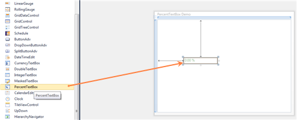

The steps to create a PercentTextBox by using Visual Studio in XAML are as follows:
1. Create a new application in Visual Studio.
2. In the Visual Studio Toolbox, click the Syncfusion WPF Toolbox tab and select PercentTextBox.
3. Drag and drop the PercentTextBox to Design View, to add the PercentTextBox to the application.

Figure 767: Control added to Design View
4. On the Properties window, customize the properties of the CurrencyTextBox.
|
XAML
<Window x:Class="WpfApp.MainWindow" xmlns="http://schemas.microsoft.com/winfx/2006/xaml/presentation" xmlns:x="http://schemas.microsoft.com/winfx/2006/xaml" Title="PercentTextBox Demo" Height="367" Width="492" xmlns:syncfusion="http://schemas.syncfusion.com/wpf">
<Grid x:Name="LayoutRoot"> <syncfusion:PercentTextBox Height="23" HorizontalAlignment="Left" Margin="92,134,0,0" Name="percentTextBox1" VerticalAlignment="Top" Width="120" /> </Grid> </Window> |

Figure 768: PercentTextBox
See Also
Creating a PercentTextBox by using Expression Blend